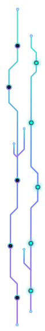
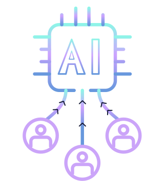
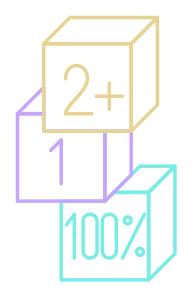

AI doesn't scale on
translation. It scales
on meaning.
 is a managed team of senior bilingual Arabic/English evaluators, built for the exact friction AI startups hit when a data pipeline has to cross a language and a culture at once. No fragmented freelancers, no QA gaps, just one accountable team, one review layer, and one point of contact, across every dialect you ship to.
is a managed team of senior bilingual Arabic/English evaluators, built for the exact friction AI startups hit when a data pipeline has to cross a language and a culture at once. No fragmented freelancers, no QA gaps, just one accountable team, one review layer, and one point of contact, across every dialect you ship to.


The same word doesn't
mean the
same thing twice.
The problem with scaling dialect: most pipelines are built to catch mistranslation, but few are built to catch the response that's technically correct and still lands wrong, off register and dialect, missing the cultural beat that a fragmented freelance pool won't reliably catch.
Fragmented freelance pools
- Inconsistent rubric interpretation across contributors
- No shared quality bar between batches
- Dialect coverage depends on who's online that day
- QA happens after delivery, if at all

- One managed team, briefed on the same rubric
- Senior evaluators review every batch before delivery
- Deliberate coverage across Gulf, Egyptian, English world-wide, Maghreb, MSA and more
- QA is a layer in the pipeline, not an afterthought
Five ways we integrate into your pipeline.
Each one is staffed by evaluators with a minimum of two years in the AI data space, and extra domain expertise (IT, Marketing, Commerce, etc.) not treated as a separate service, but as one coordinated layer of review.

-
Cross-Lingual RLHF, MTPE,
SFT & Reward ModelingGolden-pair generation, side-by-side model comparisons, and output ranking tuned for safety and regional dialect accuracy.
-
Multimodal Data
EvaluationPrompt-response analysis across text, vision, and code, held to the same bar in both English and Arabic.
-
Model Red-Teaming &
Bias MitigationStress-testing conversational agents to surface logic failures, cultural erasure, and cross-lingual hallucination before your users do.
-
UI/UX & RTL Localization
QAAuditing front-end integrity, visual hierarchy, and right-to-left layout scaling collisions that English-first QA tends to miss.
-
Front-End Code & API
EvaluationAssessing AI-generated HTML, CSS, and JavaScript, plus developer CLI and API tool integrations, for functional accuracy.

"Every batch is processed,
reviewed, and refined by senior
evaluators before it ever reaches
your engineering team."

- 2+ Years of hands-on AI data experience, minimum, for every evaluator on the team
- 1 accountable team instead of a rotating freelance pool
- 100% of batches pass a senior QA review before delivery
Built to slot into a pipeline you
already run.
Whether that means complex, multi-tiered rubrics in a spreadsheet or your own
proprietary labeling platform.
-
We learn your rubric
We adapt to your existing tooling and grading criteria rather than asking you to adopt ours.
-
The team works the batch
Bilingual evaluators apply the rubric and guidelines across dialects, modalities, and edge cases you define.
-
Senior QA before delivery
Nothing reaches your engineering team until it's been checked against the same standard, batch to batch.